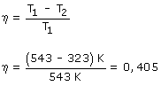
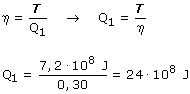

a) El máximo rendimiento es el de una máquina de Carnot trabajando entre las mismas temperaturas:  El rendimiento de la máquina es el 74.1% del máximo posible (0.3/0.405) b) El trabajo que produce el motor en una hora es: T = 200·103 W·3600 s = 7.2·108 J Aplicando la definición de rendimiento podemos saber el calor que ha tomado en 1 hora:  Si cada hora toma 24·108 J de calor y produce 7.2·108 J de trabajo está claro que devuelve , por hora, 16.8·108 J de calor |